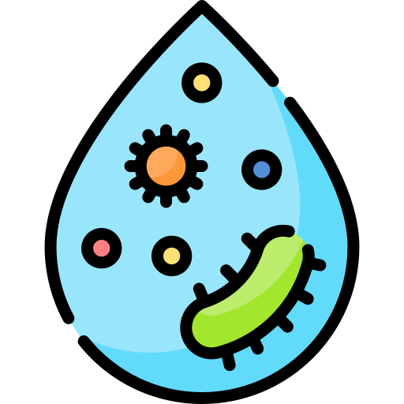

Pollution
What's Pollution ?
Pollution refers to the introduction of contaminants into the environment, causing adverse changes. This can include air, water, or soil pollution, and it often results from human activities, impacting ecosystems and public health.
What are its formes?
Pollution manifests in various forms, posing significant threats to our environment and well-being. Broadly categorized into air, water, soil and sound pollution, each type stems from diverse human activities. Understanding these pollution types is crucial for developing effective strategies to mitigate their harmful impacts and promote a healthier planet.
- Water pollution
- Air pollution
- Soil pollution
- Sound pollution
Water pollution is the contamination of water bodies, such as lakes, rivers, oceans, and groundwater, by harmful substances. This can include pollutants like chemicals, pathogens, and physical alterations that degrade water quality.
Water pollution is often considered the most dangerous type due to its widespread and severe consequences. Firstly, water is essential for all life forms, and contaminated water can lead to the spread of diseases, affecting human and ecosystem health. Additionally, pollutants can persist in water for extended periods, causing long-term environmental damage and disrupting ecosystems. The interconnected nature of water systems means that contamination can spread across vast areas, impacting not only the source but also downstream regions. Addressing water pollution is crucial for ensuring the sustainability of both human societies and the natural environment.
Air pollution refers to the presence of harmful or excessive quantities of substances in the Earth's atmosphere. These substances, known as pollutants, can be natural or human-made and include gases, particulate matter, and biological molecules.
Soil pollution stands for the introduction of contaminants into the soil, disrupting its natural composition and potentially causing adverse effects on ecosystems and human health.
Sound pollution, also known as noise pollution, is the presence of unwanted or disruptive sounds in the environment that can have negative effects on human health, wildlife, and overall well-being.
Dangers of pollution

The dangers of pollution include adverse impacts on human health, environmental degradation, climate change, water contamination, air quality deterioration, economic consequences, noise disturbance, and aesthetic degradation. These dangers collectively threaten ecosystems, biodiversity, and the overall well-being of both humans and wildlife.
What are its causes?
Pollution is primarily fueled by the inefficient use and wastage of global resources. As societies consume and produce goods, the extraction, processing, and disposal of resources often generate pollutants that contaminate the environment. Whether it's the emissions from fossil fuel combustion, the discharge of industrial waste into waterways, or the accumulation of plastic debris in oceans, the root cause can often be traced back to unsustainable resource management.
What are resources?
To find some solution for that problem fisrt we need to understand the real meaning of resources.

Resources are all the energies found in nature that can be transformed or used by humains to facilitate their lives , such as : fuel, natural gas ,gold and minerals ,tress...
The relation between waste and pollution
We can say that waste is the greatest cause of pollution, poorly used resources end up in nature and degrade over time wivh causes
infections and harmful transformations in the environment.
one the other hand, waste causes an icrease in production and this same increase promotes waste.